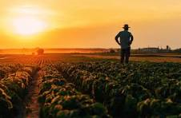

Solution Uno

Muchas personas tiran comida que aún es buena para comer. Esto puede ser porque lo olvidan o no saben cómo almacenarla correctamente. Para ayudar a reducir el desperdicio de comida, podemos intentar planificar nuestras comidas mejor y solo comprar lo que necesitamos. También podemos aprender cómo almacenar la comida correctamente para que dure más. Además, podemos donar cualquier comida extra que tengamos a bancos de alimentos o refugios locales.
Click here to learn moreSolution Dos

We can also compost food scraps instead of throwing them away. This helps reduce the amount of waste that goes to landfills and provides nutrient-rich soil for gardening.
Click here to learn moreSolution Tres

Another solution is to support local farmers and food producers. By buying locally grown food, we can reduce the carbon footprint associated with transporting food long distances. Additionally, supporting local farmers helps to sustain the local economy and promotes sustainable farming practices.
Click here to learn more